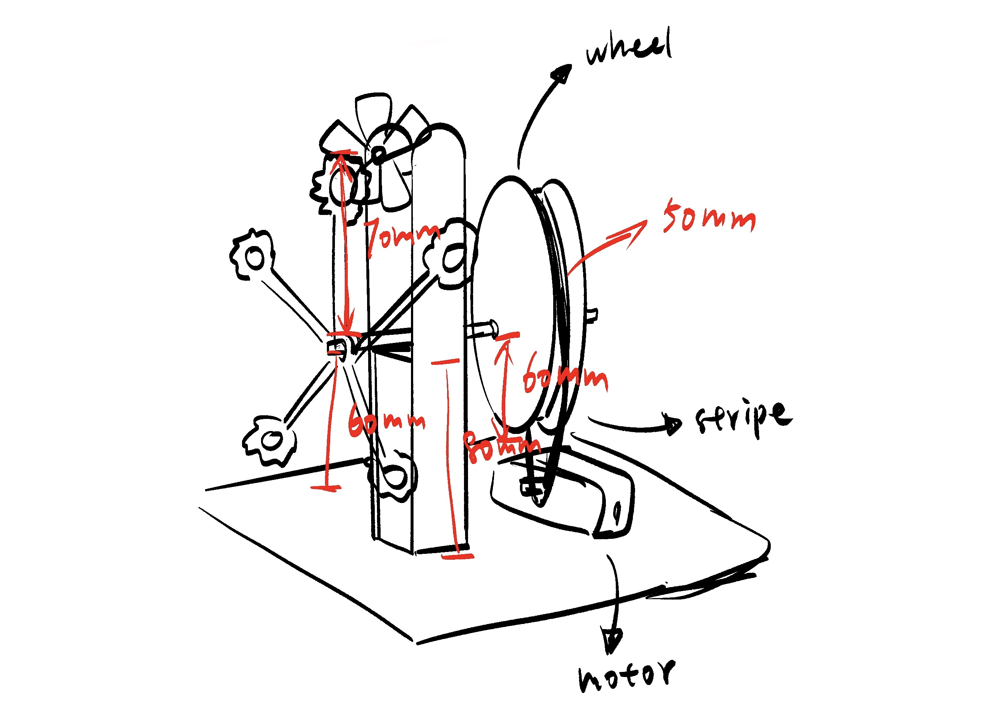

Week 4: Microcontroller Programming
Second Iteration
Last week, I created the first iteration of my bubble-blowing mechanism. Although it functioned to some extent, it didn't perform as expected and visually felt too rough and bulky. This week, my goal is to refine the structure and improve both its functionality and aesthetic quality.
To do so, I replaced the motor-based rotation with a simpler wheel and strip mechanism to drive the movement of the bubble ring. I also researched existing bubble wands in the market and noticed that many of them feature small teeth inside the ring to help hold and stretch the bubble film more effectively. Inspired by this, I redesigned my bubble ring and added teeth inside to better retain the bubble solution and improve the film formation process. (Left: initial design, Right: updated version)


In the first test, the ratio of bubble solution to water was not right, so I couldn't blow any bubbles. This time, I increased the proportion of bubble solution, and it worked — the mechanism was finally able to produce bubbles.
Fan Speed Control with Switch
For this week's assignment, I plan to experiment with controlling the motor speed. I found a YouTube tutorial demonstrating how to use a switch to adjust the speed. Each time the switch is pressed, the motor speed decreases. https://youtu.be/_VTrt9UgOkY?si=_d9egk4WVuw6v7bS